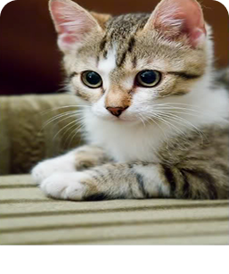

Felipo Serrade Petit
Felipo é um gato Serrade Petit de 3 anos, curioso e independente. Ele adora explorar novos ambientes, brincar com penas e é muito afetuoso com seus humanos.
üê±
Porte Pequeno
✔️
Castrado
⚖️
1.5kg